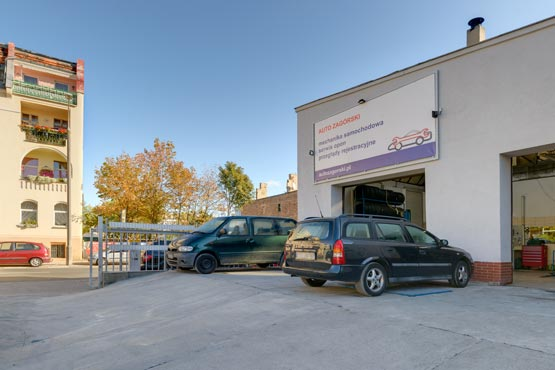
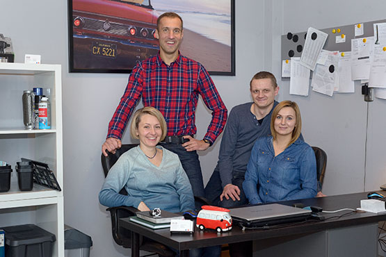

Автомобільна майстерня AUTO ZAGÓRSKI
Автомобільна механіка, надійне визначення вартості та висока якість обслуговування.
Визначити трасуЯк доїхати?
Автомобільна майстерні
AUTO ZAGÓRSKI
вул. Шамажевськего 42, 60-552 Познань
Визначити трасу як доїхати
Години роботи
Понеділок-П’ятниця: 7-20
Субота: 9-14
Неділя та свята: вихідний.
Зателефонуйте до нас
Сфера послуг автомобільної майстерні
Надійне та безкоштовне визначення вартості ремонтів, привабливі акції, приязний персонал і симпатична атмосфера.
Автомобільна механіка
гальма • підвіска • електрика • електроніка • повна комп'ютерна діагностика • обкурювання кондиціонування • повний спектр ремонту кондиціонерів • ремонт двигунів • заміна розподільного валу • заміна масел, рідин, фільтрів • заміна амортизаторів • встановлення радіоприймачів • перевірка усієї системи гальм на стенді випробовування двигуна • перевірка амортизаторів • повна діагностична лінія • встановлення збіжності • налаштування геометрії
Сервіс кондиціонування
Перевірка герметичності системи • обкурювання • поповнення холодоагенту
Сервіс шин
сезонна заміна шин • комп’ютерне балансування шин • зберігання шин
Найвища якість обслуговування
У автомобільній майстерні AUTO ZAGÓRSKI очікуйте на найвижчу якість обслуговування.
"Ваші відгуки для нас дуже важливі. Завдяки ним ми ще більш стараємось"
Томаш Загурськи, власник станції
Автомобільна майстерня AUTO ZAGÓRSKI
Наша станція контролю транспортних засобів була урочисто відкрита в грудні 2014 р. Таким чином мережа автомобільних майстерень AUTO ZAGÓRSKI була розширена на ще один сучасний об’єкт.
Автомобільна майстерня на вулиці Шамажевськего радіє визнаною репутацією. Ми допомагаємо водіям, пропонуючи широкий спектр послуг. До складу мережі Auto Zagórski входять автомобільні майстерні і станція контролю транспортних засобів. Мережа функціонує вже протягом багатьох років в Познані. Маємо велику кількість постійних клієнтів. Приєднуйтесь до задоволених клієнтів нашої компанії.
- 
-

-

-

- 
Часто задані питання
Що таке техогляд автомобіля?
Під час техогляду перевіряються найважливіші системи транспортного засобу. Він має дуже важливе значення для безпеки та покращення показників користування.
Чи вартість ремонту можна отримати за телефоном?
Попередню оцінку вартості ремонту можна отримати телефоном, однак, повна інформація можлива тільки після огляду механіка.
Чи в майстерні я можу заплатити картою?
В автомобільній майстерні пропонуємо платіж тільки готівкою.
Чи після ремонту є можливість одразу виконати технічну діагностику?
Так! Запрошуємо на станцію контролю транспортних засобів AUTO ZAGÓRSKI. Станція знаходиться неподалік (бл.100 м) від нашої майстерні.